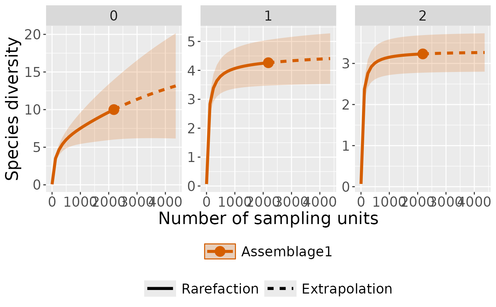

Computes incidence-based species diversity estimates (Hill numbers) from camera trap data. This is a wrapper around iNEXT package (Chao et al., 2014; Hsieh, Ma, & Chao, 2016).
Usage
ct_inext(
data,
species_column,
site_column,
size_column,
strata_column = NULL,
diversity_order = 0,
sample_size = NULL,
endpoint = NULL,
knots = 40,
n_bootstrap = 100
)Arguments
- data
A data frame, preferably the output of
ct_camera_day().- species_column
The column in the data frame representing species identifiers. Can be specified as a string or unquoted column name.
- site_column
The column in the data frame representing site identifiers. Can be specified as a string or unquoted column name.
- size_column
(Optional) The column representing the size or abundance of the species at each site. If not provided, counts of species occurrences are calculated.
- strata_column
Optional column name for a grouping variable (e.g. habitat, treatment). If provided, estimates are computed separately for each stratum.
- diversity_order
Numeric specifying the order of diversity (q) for Hill numbers. Common values:
0= species richness,1= Shannon diversity (exponential of Shannon entropy),2= Simpson diversity (inverse of Simpson index). Defaults to0.
- sample_size
Optional numeric vector specifying sample sizes for interpolation/extrapolation.
- endpoint
Optional numeric specifying the maximum sample size for extrapolation. If NULL, endpoint is the double of the current sample size
- knots
Integer specifying the number of equally spaced knots for rarefaction/extrapolation. Default is
40.- n_bootstrap
Number of bootstrap replications for estimating confidence intervals. Default is
100.
Value
A list containing:
DataInfo: Summary statistics of input data.iNextEst: Rarefaction/extrapolation results for specified diversity order.AsyEst: Asymptotic diversity estimates.
Details
This function converts the input data into an incidence-frequency vector.
The first element of the vector is the number of sampling units, followed by species frequencies.
If strata_column is provided, the conversion is done separately for each stratum.
References
Chao, A., Gotelli, N. J., Hsieh, T. C., Sander, E. L., Ma, K. H., Colwell, R. K., & Ellison, A. M. (2014). Rarefaction and extrapolation with Hill numbers: a framework for sampling and estimation in species diversity studies. Ecological Monographs, 84, 45–67. doi:https://doi.org/10.1890/13-0133.1
Hsieh, T. C., Ma, K. H., & Chao, A. (2016). iNEXT: an R package for rarefaction and extrapolation of species diversity (Hill numbers). Methods in Ecology and Evolution, 7(12), 1451–1456. doi:10.1111/2041-210X.12613
See also
ct_camera_day() for preparing sampling data (camera-day).
Examples
if (requireNamespace("iNEXT", quietly = TRUE)) {
## Import example data
camdata1 <- read.csv(ct:::table_files()[1]) %>%
dplyr::mutate(site = "pene") %>%
# remove consecutive entry of the same species at the same location within 60s
ct_independence(species_column = species,
site_column = camera,
datetime = datetimes,
threshold = 60, format = "%Y-%m-%d %H:%M:%S",
only = TRUE)
head(camdata1)
# Prepare sampling data (camera-day)
camday <- ct_camera_day(
data = camdata1,
deployment_column = camera,
datetime_column = datetime,
species_column = species,
size_column = number
)
# RAREFACTION/EXTRAPOLATION
int_ext <- ct_inext(data = camday,
diversity_order = c(0, 1, 2),
species_column = species,
site_column = sampling_unit,
size_column = number,
n_bootstrap = 50)
int_ext
# plot with curves colored by order
ct_plot_inext(int_ext, type = 1, color_var = "Order.q")
# plot with curves faceted by order
ct_plot_inext(int_ext, type = 1, facet_var = "Order.q")
}
#> Warning: Insufficient data to provide reliable estimators and associated s.e.
#> Warning: `aes_string()` was deprecated in ggplot2 3.0.0.
#> ℹ Please use tidy evaluation idioms with `aes()`.
#> ℹ See also `vignette("ggplot2-in-packages")` for more information.
#> ℹ The deprecated feature was likely used in the iNEXT package.
#> Please report the issue at <https://github.com/AnneChao/iNEXT/issues>.
#> Warning: invalid color.var setting, the iNEXT object do not consist multiple assemblages, change setting as Order.q
